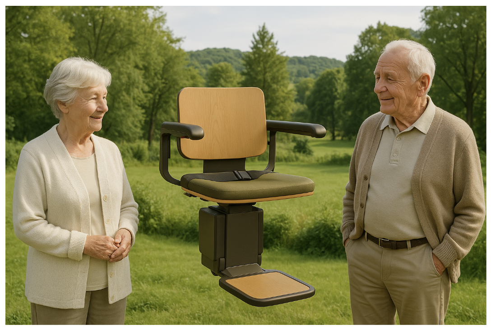
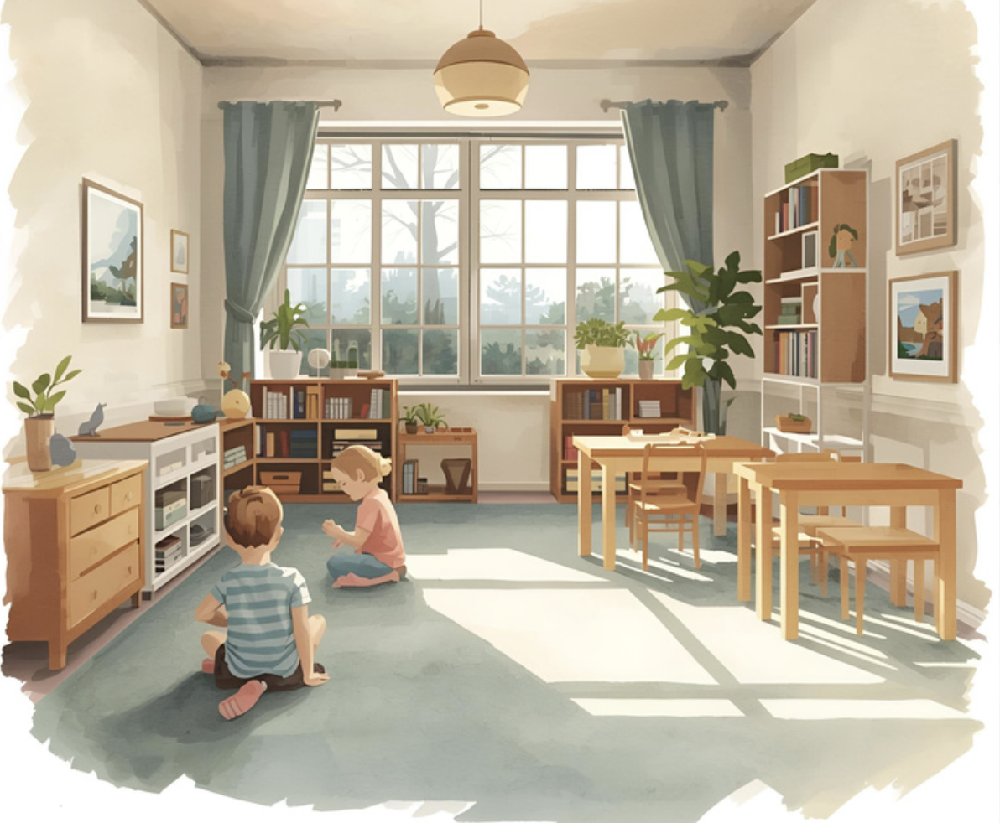
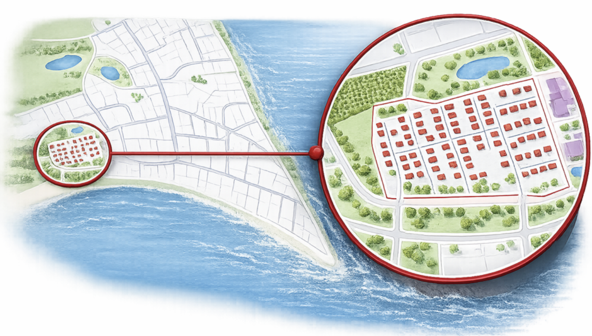
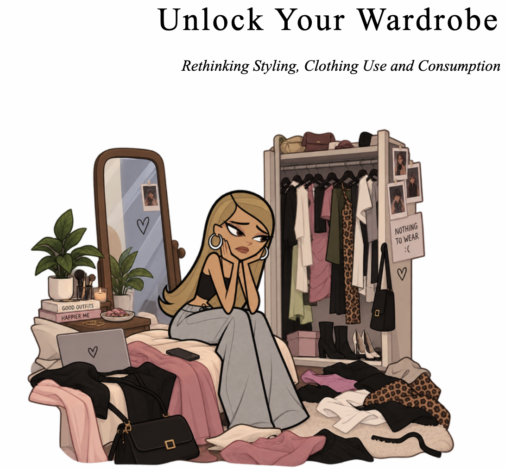
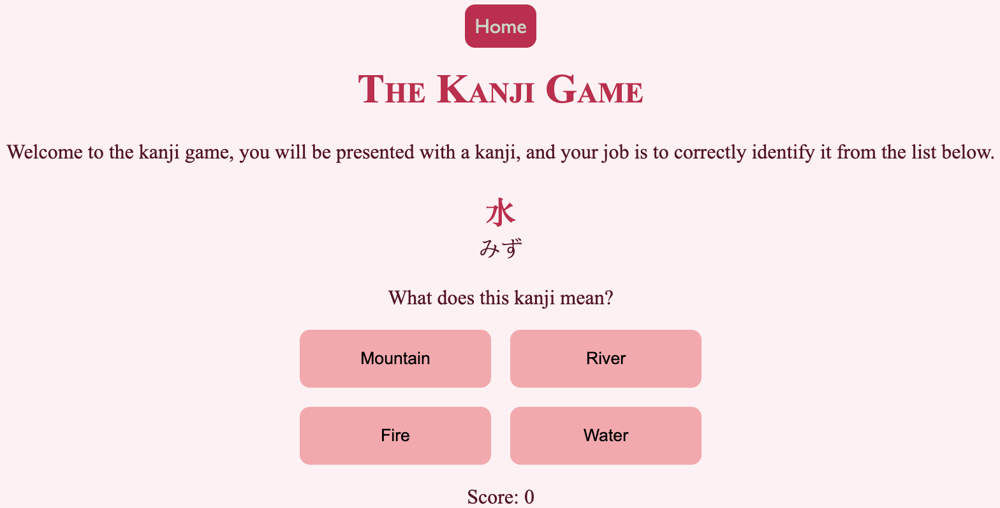

My portfolio currently consists primarily of semester projects completed
during my studies, alongside personal projects developed outside of my
coursework. As I continue to develop my skills and gain experience, new
projects will be added to this portfolio.
First Semester Project
During our first-semester project, we were tasked with developing a
simple game that addressed a societal issue. Our group chose to focus
on the environmental impact of standby power consumption and explore
how much energy could potentially be saved if households collectively
switched off just five unused devices.
Technology used
- Block programming
- JavaScript
Second Semester Project
This project primarily focused on mechanical engineering. Our task was
to rethink the design of an elevator and incorporate regenerative
energy technology. The goal was to recover energy while the elevator
was travelling downwards and reuse that energy when travelling
upwards, thereby reducing the elevator's overall energy consumption.

Technology used
- CAD drawing
- PASTEL analysis
- Market analysis
Third Semester Project:
In this project, our task was to develop a program that could help
address a social challenge within the care sector. Our group chose to
focus on kindergartens, where substitute staff may find it difficult
to navigate daily routines and important information. We developed a
program designed to provide an overview of areas such as allergies,
weather conditions, daily activities and other relevant information,
making it easier for substitute staff to structure the day.

Technology used
- Java
- UML Class Diagram
- Use Case and User Stories
Fourth Semester Project
In this project, our task was to select an area in Denmark without
access to district heating and explore the implementation of a
Termonet system. We developed a client-server system designed to help
users manage their heating system through different operating modes
while providing information about energy consumption and costs.

Technology used
- Java
- Domain diagram
- UML diagram
- Use case and User Stories
Fifth Semester Project
This is our current project and is still in the early stages of
development. The project focuses on developing a program that
encourages users to make better use of the clothes they already own
rather than purchasing new items. The aim is to support more
sustainable consumption and contribute to a circular economy by
helping users rediscover and combine clothing from their existing
wardrobe.

Technology used
- Python
- JavaScript
- HTML
- CSS
The Kanji Game
This is a personal project I am developing for my girlfriend, who is
currently studying Japanese. The game is designed as a simple learning
tool where the player is presented with a question and four possible
answers, with a point system used to track progress. The current
version focuses on kanji, but the long-term goal is to expand the
project into three different learning games covering kanji, Japanese
particles and grammar.

Technoloy used
- HTML
- CSS
- JavaScript